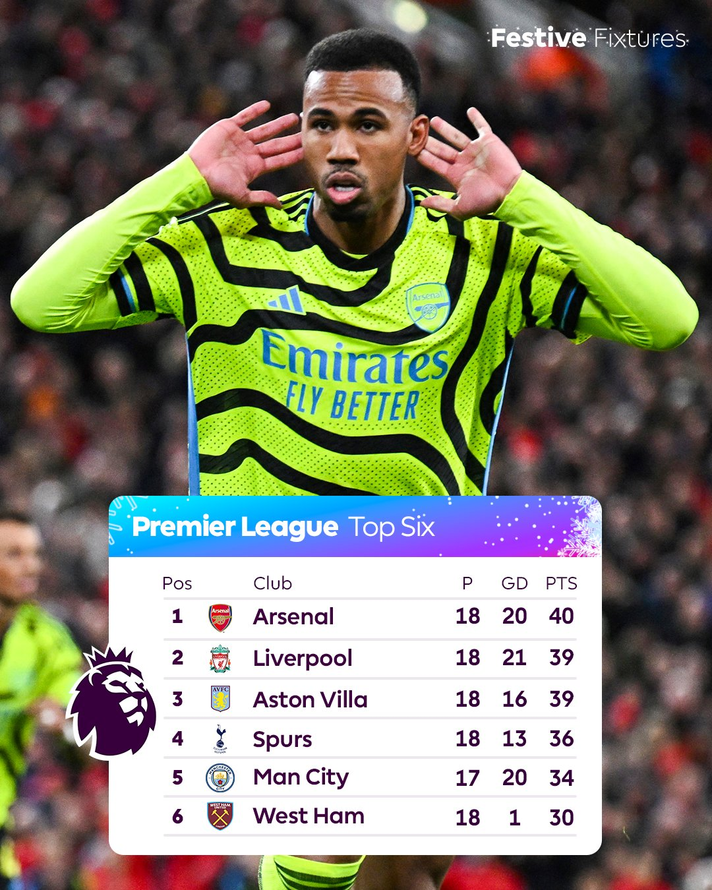

Luego de salir segundos la anterior temporada, este año el Arsenal viene en busqueda de mantenerse en puestos
de Champions League y si todo sale bien poder disputar una vez mas el titulo.
Tabla de la Premier League

Tabla de goleadores y asistentes del Arsenal
(GOLES)
Eddie Nketiah y Buakayo Saka (5)
Kai Havertz y Martin Ødegaard (4)
G. Jesus, D. Rice y L. Trossard (3)
Gabriel Martinelli (2)
F. Vieira, T. Tomiyasu, O. Zinchenko, W. Saliba y B. White (1)